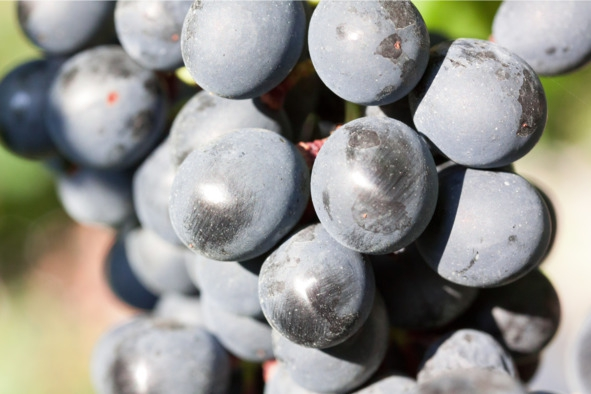

О культуре пития ...Спиртовое брожение, или как сахар превращается в спирт. .


Спиртовое брожение лежит в основе приготовления любого алкогольного напитка. Это самый простой и доступный способ получить этиловый спирт. Второй метод – гидратация этилена – является синтетическим, применяется редко и только в производстве водки.
Спиртовое брожение – это процесс превращения дрожжами глюкозы в этиловый спирт и углекислый газ в анаэробной (бескислородной) среде. Уравнение следующее:
C6H12O6 > 2C2H5OH +2CO2
В результате одна молекула глюкозы превращается в две молекулы этилового спирта и две молекулы углекислого газа. Также в процессе брожения образуются сивушные масла: бутиловый, амиловый, изоамиловый, изобутиловый и другие спирты, которые являются побочными продуктами обмена аминокислот. Во многом сивушные масла формируют аромат и вкус напитка, но большинство из них вредны для человеческого организма, поэтому производители стараются очистить спиртное от вредных сивушных масел, но оставить полезные примеси.
Дрожжи – это одноклеточные грибы шарообразной формы (всего существует около 1500 видов), активно развивающиеся в жидкой или полужидкой среде, богатой сахарами: на поверхности плодов и листьев, в нектаре цветов, мертвой фитомассе и даже почве.
Это одни из самых первых организмов, «прирученных» человеком. В основном дрожжи используются для выпечки хлеба и приготовления спиртных напитков. Археологами установлено, что древние египтяне за 6000 лет до н. э. научились делать пиво, а к 1200 году до н. э. освоили выпечку дрожжевого хлеба.
Научное исследование природы брожения началось в XIX веке. Первыми его химическую формулу предложили Ж. Гей-Люссак и А. Лавуазье, но осталась неясной сущность процесса, возникло две теории. Немецкий ученый Юстус фон Либих предполагал, что брожение имеет механическую природу – колебания молекул живых организмов передаются сахару, который расщепляется на спирт и углекислый газ. В свою очередь, Луи Пастер считал, что в основе процесса брожения биологическая природа – при достижении определенных условий дрожжи начинают перерабатывать сахар в спирт. Пастеру опытным путем удалось доказать свою гипотезу, позже биологическую природу брожения подтвердили другие ученые.
Русское слово «дрожжи» происходит от старославянского глагола drozgati, что значит «давить» или «месить», здесь прослеживается явная связь с выпечкой хлеба. В свою очередь, английское название дрожжей yeast восходит к староанглийским словам gist и gyst, которые значат «пена», «выделять газ» и «кипеть», что ближе к винокурению.
Виды дрожжей
В приготовлении алкогольных напитков используют спиртовые, винные или пивные дрожжи. У каждого вида есть своя сфера применения, преимущества и недостатки.
Спиртовые дрожжи подходят для зерновых дистиллятов, любого крахмалосодержащего сырья и сахарного самогона. Быстро бродят (3—7 дней) и неприхотливы к внешним условиям (в сравнении с другими штаммами). Для сбраживания фруктовых браг спиртовые дрожжи обычно не применяются, поскольку могут испортить аромат и вкус напитка, добавив характерные спиртовые тона. Большинство начинающих самогонщиков вместо спиртовых дрожжей используют хлебопекарные сухие или свежие (прессованные) ввиду их большей доступности.
Винные дрожжи нужны для приготовления вина, наливок (сделанных методом брожения) и фруктовых браг для бренди, коньяка, кальвадоса и т. д. Не влияют или даже обогащают аромат и вкус готовых напитков, но имеют длительный период брожения (30—60 дней) и чувствительны к внешним условиям: температуре, освещению, концентрации сахара и спирта в сусле.
Винные дрожжи бывают «дикими» и «культурными». «Дикие» – штаммы, живущие на кожице фруктов и ягод, представляют собой характерный белый тонкий налет на плодах (не путать с плесенью). «Культурные» – лучшие расы, отобранные и разведенные в лабораторных условиях из дрожжей на винограде, обычно распространяются в виде порошка. В плане стабильности брожения, крепости и формирования органолептических свойств напитка «культурные» дрожжи лучше «диких».

Белый налет на винограде – винные дрожжи
Пивные дрожжи впервые как отдельный штамм были выделены специалистами компании Carlsberg в 1881 году. До этого в пивоварении использовались случайные штаммы дрожжей, попадавшие в сусло из воздуха. Процесс брожения было сложно контролировать, а готовое пиво больше напоминало кисловатую брагу с хмелем и мало походило на современный, хорошо сбалансированный пенный напиток.
Пивные дрожжи бывают двух видов:
– верхового брожения (рабочая температура 14—28°С) – в активном состоянии находятся сверху сусла, благодаря высшим спиртам и эфирам формируют широкую гамму ароматов, позволяют создавать более крепкие сорта пива;
– низового брожения (оптимальная температура 6—8°С) – при брожении оседают на дне в виде рыхлого осадка, лучше раскрывают солодовый аромат и хмелевые нотки, а пиво всегда светлое. Около 97% современного промышленного пива производят с использованием дрожжей низового брожения.
Сырье для получения алкогольных напитков
Дрожжи перерабатывают на спирт четыре вещества: сахарозу (обычный сахар), мальтозу (сахар, полученный путем расщепления крахмала в зерне, представляет собой два остатка глюкозы), фруктозу и глюкозу. Одна молекула сахарозы состоит из двух равных молекул фруктозы и глюкозы. Также глюкозу и сахарозу в достаточно больших количествах содержат ягоды, фрукты и мед.
Если большинство фруктовых соков можно забраживать сразу, а сахар и мед – после разведения водой, то в случае с зерном сначала нужно преобразовать крахмал до мальтозы, этот процесс называется осахариванием. Осахаривание – расщепление крахмалосодержащего сырья (злаков, муки, крупы, картофеля и т. д.) до простых сахаров под воздействием естественных (из солода) или искусственных (синтетических) ферментов. В силу температурных особенностей технологии первый метод называется горячим осахариванием, второй – холодным.
Горячее осахаривание – классический метод, который используется столетиями для получения пива, виски, бурбона и других алкогольных напитков на основе зерна. Сначала злаки проращивают во влажной среде, благодаря этому активируются нужные ферменты, способные перерабатывать крахмал. Проросшее до нужного состояния зерно называют солодом. Готовый солод сушат, перемалывают, заливают водой и несколько часов варят при температуре 60—72° C, чтобы крахмал расщепился до сахара. Полученное сладкое варево охлаждают, вносят дрожжи и перебраживают на спирт.
При холодном осахаривании солод заменяют двумя искусственными ферментами – амилосубтилином и глюкаваморином. Первый частично расщепляет молекулы, второй – перерабатывает крахмал в сахар. Технология холодного осахаривания значительно проще и дешевле солодовой варки, а выход спирта примерно одинаковый. Ферменты вместе с водой просто добавляют в сырье комнатной температуры на этапе приготовления браги. Преобразование крахмала в сахар и брожение идут почти одновременно.
Однако холодное осахаривание в основном используется только для получения чистого спирта-ректификата, поскольку большинство винокуров считают, что синтетические ферменты оставляют специфическое послевкусие в напитке даже после нескольких дистилляций (перегонок), а для полной очистки требуется ректификация, после которой из алкоголя удаляются как вредные, так и полезные примеси, отвечающие за аромат и вкус.
Теоретический выход спирта из глюкозы и фруктозы одинаков – 0,647 л из 1 кг сырья, а 1 кг сахарозы или мальтозы дает до 0,681 л спирта. Практический выход обычно всегда ниже теоретического на 10—15%. Это значит, что при прочих равных условиях из сахарозы или мальтозы получается на 5% больше самогона, чем из глюкозы и декстрозы.
Стоит отметить, что сладость вещества как таковая не имеет прямого отношения к выходу спирта, поскольку дрожжам требуются углеводы. Например, синтетический заменитель цикламат в 30—50 раз слаще сахара, но дрожжи его не перерабатывают. Из искусственных сахарозаменителей алкоголь не производят.